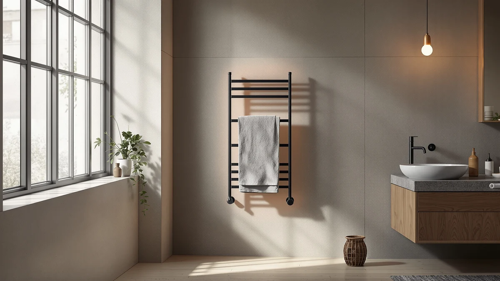

Best Towel Warmer for Massage Therapist (2026)
Prices and picks verified as of September 2026. Independent, reader-supported reviews.


Quick Answer
For most solo massage practices, the EASYINBEAUTY Hot Towel Warmers for Spa is the best towel warmer for massage therapists. It heats in about five minutes, holds 16 small towels, and folds flat for storage between clients. If you're supplying a shared studio, the 46L VEVOR cabinet below holds enough towels for a full shift across multiple therapists.
Our pick: EASYINBEAUTY Hot Towel Warmers for ($37.99) Check Price on Amazon
Bottom line: our top pick is the EASYINBEAUTY Hot Towel Warmers for Spa at $37.99. The best budget option is the TASALON Hot Towel Steamer for Facials at $34.99.
Things to Know Before You Buy
- Capacity varies from 5L to 46L. The right towel warmer for massage therapists depends on room count: a solo practice rarely needs more than 5 to 8 liters, while a multi-therapist spa suite benefits from a 23L or 46L cabinet.
- Heat-up time runs about 5 minutes on every model we compared. All seven units reach roughly 80°C (176°F) in that window, so speed isn't the differentiator between them, capacity and footprint are.
- Auto shutoff timers prevent overheating between sessions. Look for a timed shutoff so towels don't scorch if a client runs late and the cabinet sits closed longer than planned.
- Stainless steel interiors resist the moisture massage oil and steam create. Every warmer on this list uses a stainless steel rack or interior, which holds up better than plastic under daily spa humidity.
- Counter space in a treatment room is tight. Compact 5L models fold down to fit a shelf, while cabinet-style warmers need dedicated floor or counter space near your linen supply.
Picking the best towel warmer for massage therapist use comes down to one question: how many hot towels do you need ready between clients, and how fast? A single-room studio burns through fewer towels than a shared spa suite, and the wrong size either leaves you short during a busy Saturday or eats counter space you don't have. We compared seven salon-grade towel warmers built for massage, facial, and spa work, weighing capacity, heat-up time, and how easily each one fits into a treatment room's daily routine.
Massage therapists have different needs than home users. You're heating towels for back-to-back sessions, not an occasional weekend soak, so recovery time between batches and how many towels stay hot at once matter more than looks. We cross-checked manufacturer specs against verified buyer photos and reviews from estheticians and massage practitioners who use these warmers daily, then narrowed the list to units with the capacity, price, and safety features that make sense for a working practice.
Our pick is the EASYINBEAUTY Hot Towel Warmers for Spa. At $37.99 it holds up to 16 small towels, reaches operating temperature in about five minutes, and folds down small enough to store on a shelf between clients, which makes it the easiest starting point for a solo massage practice. If you run a busier studio or work alongside other therapists, the larger VEVOR cabinets below scale up to 46 liters without changing how the warmer operates.
Why You Should Trust Us
Ilane Tall covers home and personal care equipment for Best Towel Warmers, focusing on how these products hold up in real bathrooms, salons, and treatment rooms rather than in a manufacturer's photo. For this guide to the best towel warmer for massage therapist use, we pulled specs directly from each manufacturer's listing, cross-referenced capacity and dimensions against verified Amazon product pages, and read through owner feedback from buyers who purchased these warmers for professional use. Every price and spec here reflects what was publicly listed at the time of publishing.
How We Picked
We started with towel warmers marketed specifically for spa, salon, and massage use rather than general bathroom towel racks, since choosing the right towel warmer for massage therapist practices depends on heat-up speed and towel capacity, not bathroom decor. We looked for models between 5L and 46L so solo practitioners and multi-room studios both have a fit, and we prioritized stainless steel interiors and clip-in racks over plastic components that wear out faster under daily humidity. We also weighed price against capacity: a $38 unit that holds 16 towels serves a different practice than a $135 cabinet built for a shared suite, so we made sure to include an option at each price point.
How We Compared
We compared the best towel warmer for massage therapist candidates on four factors: rated capacity in towels and liters, published heat-up time, safety features like auto shutoff and over-temperature protection, and patterns in verified owner reviews. Small commercial appliances like these rarely come with independent lab results, so we relied on manufacturer specifications, product listing details, and what verified buyers reported after using each unit in a working practice. Where owners consistently flagged an issue, such as a control knob or a leak point, we noted it as a drawback below instead of leaving it out.
Our Picks

EASYINBEAUTY Hot Towel Warmers for
What we like
- Reaches towel-warming temperature in about 5 minutes
- Folds down to an 11 by 5.7 inch block for shelf storage
- Holds up to 16 small towels or 6 large towels per load
Flaws but not dealbreakers
- 5L capacity means refilling between longer sessions if you go through towels quickly
- Too new a listing to have an established review history yet
| Material | Stainless steel |
| Size | 5L |
The EASYINBEAUTY towel steamer is built around speed and storage rather than raw capacity. It heats to around 80°C in five minutes, according to the manufacturer, and the interior splits into three compartments so you can separate face towels from body towels instead of stacking them in one pile. At $37.99, it's the least expensive way to add a dedicated towel warmer for massage therapist work to a single treatment room.
What sells us on this one for a solo practice is the nesting design. When you're done for the day, the heating base tucks inside the steamer basket and the whole unit shrinks to a slim block you can slide onto a shelf or into a cupboard. That matters more than it sounds like in a rented treatment room where counter space is already claimed by oils, linens, and a massage table. The tradeoff is capacity: at 5L, it's sized for one therapist working through appointments one at a time, not a shared station running two chairs.

TASALON Hot Towel Steamer for
What we like
- Three timer settings (10, 20, or 30 minutes) with automatic shutoff
- Lightweight and portable enough for mobile massage therapists
- Holds up to 16 mini towels per load
Flaws but not dealbreakers
- Only available in pink, which may not fit every treatment room's look
- Capacity matches the EASYINBEAUTY at this price, so it's not a capacity upgrade
| Material | Stainless steel |
| Size | M Size |
The TASALON steamer heats in about five minutes, similar to the EASYINBEAUTY, but it handles shutoff differently. Instead of one fixed timer, you choose between 10, 20, and 30 minute settings, so the unit powers down automatically no matter how your schedule runs that day. That's a useful safety margin if a client's massage session runs past when you started the towels warming.
At $37.99 for a unit that holds 16 mini towels, it's priced identically to our top pick and aimed at the same solo-practice use case. The main reason to choose it over the EASYINBEAUTY is the timer flexibility: if you'd rather set a longer hold time and forget about it during a full massage session, the TASALON's three-gear timer gives you that option. The tradeoff is mostly cosmetic. It currently ships only in pink, and buyers running a more clinical-looking treatment room may prefer a neutral finish.

VEVOR Hot Towel Warmer 5L
What we like
- Built-in clean lamp for disinfecting the interior between towel batches
- Over-temperature protection with automatic power-off if the unit runs abnormally
- 360-degree heating design avoids cold spots in the cabinet
Flaws but not dealbreakers
- Costs about $22 more than the EASYINBEAUTY for a similar 5L capacity
- Holds slightly fewer towels (8 to 12) than the cheaper 5L options
| Material | Stainless steel |
| Size | 5L |
VEVOR's 5L cabinet costs more than our top two picks, and the extra $22 buys real safety features rather than brand recognition alone. It includes over-temperature protection that shuts the unit down automatically if it runs hotter than intended, plus a clean lamp for disinfecting the interior between towel loads, a feature neither of the cheaper picks offers.
The 360-degree heating design is meant to keep towels evenly warm rather than hot on one side and lukewarm on the other, which matters if you're pulling towels from the bottom of a stack mid-session. Capacity sits at 8 to 12 towels, a bit lower than the EASYINBEAUTY's 16, so this pick suits a therapist who values the safety and disinfection features more than sheer towel count. VEVOR sells the same cabinet design in sizes up to 46L, so if this one works for your routine, scaling up later doesn't mean learning a new interface.

VEVOR Hot Towel Warmer 46L
What we like
- Two-tier design with 4 stainless steel racks holds up to 48 towels
- Same disinfection lamp and over-temperature protection as VEVOR's smaller cabinets
- Sized for a shared station instead of a single treatment room
Flaws but not dealbreakers
- At $134.90, it's the most expensive pick on this list by a wide margin
- Floor or counter footprint is significantly larger than the 5L and 8L options
| Material | Stainless steel |
| Size | 46L |
If a therapist working solo needs a 5L or 8L warmer, a spa running three or four massage rooms off one linen station needs something closer to this. The 46L VEVOR cabinet splits into two tiers across 4 stainless steel racks and holds up to 48 towels at once, enough to supply a full shift of appointments without reheating batches between clients.
It carries over the same over-temperature protection and clean lamp disinfection as VEVOR's smaller cabinets, so scaling up in size doesn't mean giving up the safety features. The catch is obvious: at $134.90 and a footprint built for 48 towels, it's overbuilt for a single treatment room. This pick makes sense for a shared studio or a spa desk serving multiple therapists, not for a therapist starting a solo massage practice.

VEVOR Hot Towel Warmer 8L
What we like
- Holds 16 standard-sized towels in a single load, matching our top pick's capacity at higher volume
- Stainless steel rack and clip included for organizing towels inside the cabinet
- Priced between the compact 5L units and VEVOR's larger cabinets
Flaws but not dealbreakers
- No disinfection lamp, unlike VEVOR's 5L, 23L, and 46L models
- Single rack means less separation between towel sizes than the tiered cabinets
| Material | Stainless steel |
| Size | 8L |
The 8L VEVOR sits in an awkward but useful spot in the lineup. It holds as many standard towels as our top overall pick, 16, but does it as a fixed cabinet instead of a foldable steamer, and costs $68.90 instead of $37.99. That extra cost buys a permanent stainless steel rack and clip system built for daily commercial use rather than a home-facial accessory pressed into salon service.
Where it falls short of VEVOR's other cabinets is the missing clean lamp disinfection feature that the 5L, 23L, and 46L versions include. If disinfection between loads matters to your practice, the 5L VEVOR at $59.90 gives you that feature for less money and less capacity, or the 23L version gives it back at higher capacity. The 8L version makes the most sense if you specifically want 16-towel capacity in a dedicated cabinet without paying for a disinfection lamp you might not use.

Hot Towel Warmer SalonDepot 8L
What we like
- Sized to fit both 27 by 14 inch body towels and smaller facial towels
- Compact footprint despite the 8L capacity
- Designed and marketed specifically for salon and massage therapy use
Flaws but not dealbreakers
- At $75.99, it's priced above VEVOR's 8L cabinet without a published capacity advantage
- No manufacturer-listed safety features like over-temperature shutoff, unlike the VEVOR lineup
| Material | Stainless steel |
| Size | — |
SalonDepot positions this 8L warmer directly at estheticians and massage therapists rather than home users, and the sizing reflects that. It fits 10 full-size body towels at 27 by 14 inches, or 12 to 14 smaller facial towels, covering both typical massage linens and the smaller towels used for facial work in the same cabinet.
At $75.99 it costs more than VEVOR's 8L cabinet without listing the same over-temperature protection or clean lamp disinfection, so the appeal here is mostly about towel-size flexibility rather than added safety features. If your practice regularly switches between full body towels and smaller facial towels in the same shift, that dual sizing may be worth the premium. If you only use one towel size, the VEVOR 8L or 5L covers the same ground for less.

VEVOR Hot Towel Warmer 23L
What we like
- See-through window lets you check towel temperature without opening the cabinet and losing heat
- Holds up to 36 towels across multiple stainless steel racks
- Includes the same clean lamp disinfection and over-temperature protection as VEVOR's other cabinets
Flaws but not dealbreakers
- At $81.90, it costs more than double our top pick for a feature set most solo practices won't fully use
- Larger footprint than the 5L and 8L options, closer to the 46L cabinet's size class
| Material | Stainless steel |
| Size | 23L |
This 23L VEVOR splits the difference between the smaller cabinets and the 46L flagship, holding up to 36 towels while adding a see-through window the other sizes skip. Checking how full or how hot the cabinet is without opening the door and losing heat is a small detail, but it adds up over a full day of appointments.
It keeps the clean lamp disinfection and over-temperature protection from VEVOR's other cabinets, so you're not giving anything up by choosing the mid-size option. At $81.90, it costs more than the 5L and 8L VEVOR cabinets, but less than half of the 46L. For a busy solo practice or a two-therapist office that needs more than 16 towels on hand but doesn't need capacity for 48, this is the practical middle ground.
Quick Comparison
| Product | Material | Price | Rating | Best for | Get it |
|---|---|---|---|---|---|
| EASYINBEAUTY Hot Towel Warmers for | Stainless steel | $37.99 | 4 | Solo practices, fastest setup | View on Amazon → |
| TASALON Hot Towel Steamer for | Stainless steel | $37.99 | 4 | Flexible timer control | View on Amazon → |
| VEVOR Hot Towel Warmer 5L | Stainless steel | $59.90 | 4 | Disinfection and safety features | View on Amazon → |
| VEVOR Hot Towel Warmer 46L | Stainless steel | $134.90 | 4 | Multi-therapist studios | View on Amazon → |
| VEVOR Hot Towel Warmer 8L | Stainless steel | $68.90 | 4 | 16-towel fixed cabinet | View on Amazon → |
| Hot Towel Warmer SalonDepot 8L | Stainless steel | $75.99 | 4 | Mixed towel sizes for massage and facials | View on Amazon → |
| VEVOR Hot Towel Warmer 23L | Stainless steel | $81.90 | 4 | Mid-size with viewing window | View on Amazon → |
Is a towel warmer worth it for a massage therapist's practice?
Yes, for most practices.
What size towel warmer do I need for a massage studio?
A solo massage therapist working out of one treatment room typically does fine with a 5L to 8L warmer holding 12 to 16 towels.
The Competition
Every towel warmer we compared for massage therapists earned its spot for a specific reason, but a few came close to changing our top recommendation. The SalonDepot 8L is priced within range of VEVOR's cabinets and markets itself directly at massage therapists, though it doesn't list the over-temperature protection or disinfection lamp that VEVOR builds into its lineup at a similar price. The TASALON steamer matches our top pick on price and capacity almost exactly, and either one is a reasonable choice if manual timer control matters more to you than a fixed auto-off cycle.
We also weighed whether the 46L VEVOR cabinet should be the default recommendation instead of the compact EASYINBEAUTY, since it holds nearly three times as many towels. For a solo massage therapist working out of one treatment room, though, that capacity goes largely unused, and the higher price and larger footprint don't pay off unless you're supplying more than one station.
Frequently Asked Questions
Is a towel warmer worth it for a massage therapist's practice?
Yes, for most practices. A towel warmer lets you offer hot towels for back-to-back massage sessions without heating one batch at a time in a microwave or slow cooker, and models built for salon use add auto shutoff and stainless steel interiors that hold up to daily humidity better than household alternatives.
What size towel warmer do I need for a massage studio?
A solo massage therapist working out of one treatment room typically does fine with a 5L to 8L warmer holding 12 to 16 towels. A shared studio with two or more therapists usually needs a 23L to 46L cabinet so towels stay available through a full shift without reheating mid-session.
What is the best towel warmer for massage therapist use overall?
The EASYINBEAUTY Hot Towel Warmers for Spa is the best towel warmer for massage therapist use for most solo practices. It reaches temperature in about five minutes, holds up to 16 small towels, and folds down small enough to store on a shelf between clients, all at $37.99.